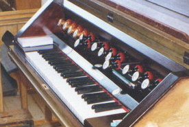
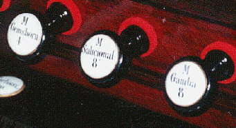
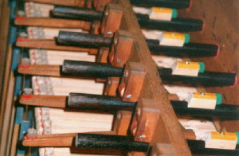
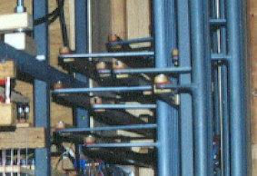
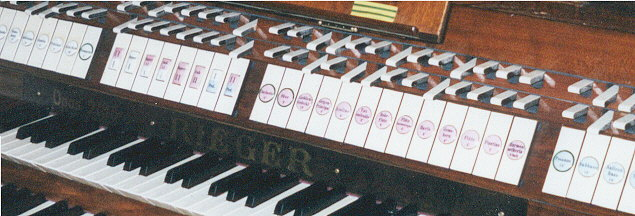
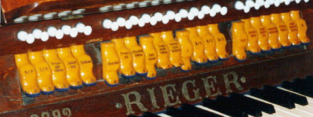
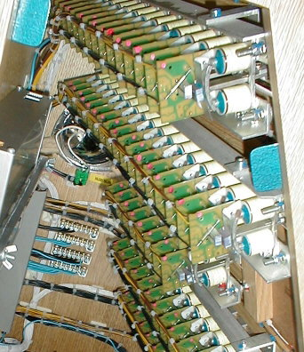

Registrační aparát hracího stolu zahrnuje všechny ovládací prvky registrace a první (řídicí) členy navazující traktury. Jeho uspořádání, použité komponenty a vzhled závisí na typu rejstříkové traktury a částečně i na typu vzdušnice. Základními ovladači rejstříků jsou rejstříková táhla, rukojeti (manubria) a sklopky. Táhla jsou využívána především ve varhanách s mechanickou rejstříkovou trakturou (pro přesun zásuvky či otevření rejstříkového ventilu ve vzdušnici je potřeba určitá (někdy relativně velká) síla a dráha pohybu ovladače v rozmezí několika (až cca 10 i více) centimetrů. U pneumatické a elektrické traktury stačí k ovládání podstatně menší síla i dráha pohybu (nutná jen k otevření malého ventilu v relé v hracím stole nebo sepnutí kontaktů). Zde se nejčastěji používají sklopky (spínač ve formě klopné destičky). Podrobný popis funkce ovládacích prvků ve vazbě na jednotlivé typy traktur je v kapitolách o mechanické, elektrické, pneumatické a kombinované rejstříkové traktuře. Ovládací prvky rejstříků jsou popsány jejich názvy (zpravidla jménem a stopovou výškou) a někdy jsou číslovány (výhodné pro přehledný zápis registrace). Popis býval dříve na pergamenových štítcích umístěných v jejich blízkosti, později se používaly kovové či smaltované tabulky. Velmi rozšířený je popis, tvořený kulatým porcelánovým knoflíkem, u něhož je nápis vytvořen v krycí glazuře (napsán barvou a vypálen spolu s knoflíkem obdobně jako malovaný porcelán). Používá se u manubrií i sklopek, kde je nalepen v jejich střední části. U sklopek lisovaných z plastů je popis rytý (nebo gravírovaný) a vyplněný barvou tak, aby se při běžném používání nesetřel. Rozmístění rejstříkových ovládačů na konkrétním hracím stole je různé. Liší se podle velikosti varhan (počtu manuálů a počtu strojů). Ovládací prvky mohou být nad jednotlivými manuály a po stranách hracího stolu. Většinou jsou rejstříky jednoho stroje nějak vizuálně (tvarem, barvou nebo dalším popisem např. MI, MII pro manuály a P pro pedál) či rozmístěním odlišeny od ostatních (v blízkosti příslušného manuálu či seskupené do bloku). Snahou varhanáře je umístění všech ovládačů v dosahu varhaníka a co nejergonomičtější ovládání (panely s rejstříky do půlkruhu kolem stanoviště varhaníka). Součástí registračního aparátu hracího stolu jsou i pomocná zařízení (popis v samostatné kapitole) - především volné kombinace, kolektivy a crescendo. Programování volných kombinací opět závisí na typu traktury, ovládací prvky ale mohou být velmi podobné až totožné (jen elektronické (Setzer a počítačové) kombinace zpravidla nemají u rejstříkových ovládačů žádný dodatečný viditelný prvek). Na následujících fotografiích jsou zachyceny ukázky hracích stolů varhan s příklady nejčastějších typů registračního aparátu: |
  |
Příklad častého uspořádání je na těchto fotografiích.
Rejstříkové rukojeti jsou umístěny nad manuálem, rejstříková táhla (tyče)
mají kruhový průřez, popis je tvořen porcelánovými knoflíky. Traktura
je mechanická. Na následující fotografii a animaci je vidět uspořádání
a činnost mechaniky registrace uvnitř hracího stolu (varhany s kuželkovou
vzdušnicí, rejstříková traktura otevírá jen ventily, proto používá abstrakty
a úhelníky stejné konstrukce a rozměrů jako tónová traktura). |
 |
Další časté uspořádání uvádějí následující fotografie.
Manubria registrace jsou na panelech po stranách manuálových klaviatur.
V tomto případě jsou opatřeny popisem pomocí pergamenových štítků, nalepených
na tabulkách v jejich blízkosti (viz detail): |
Na následujícím obrázku a animaci je představena
mechanika registrace těchto varhan uvnitř varhanní skříně. Varhany mají
zásuvkovou vzdušnici, lineární pohyb manubria je převeden pomocí raménka
na hřídeli na rotační a na jejím konci zpět na lineární (ve směru kolmém
na původní) pro přesun zásuvky. Pro pohyb zásuvkami už je třeba větší
síly, než pro otevírání ventilů u kuželkové vzdušnice v předchozím příkladu,
celá mechanika je proto značně robustnější: |
 |
|
U varhan s pneumatickou, elektrickou
a smíšenou rejstříkovou trakturou se pro ovládání registrace
používají nejčastěji sklopky - spínače ve formě svisle
či šikmo upevněné destičky, která se překlápí (naklápí - odtud název)
do dvou poloh okolo vodorovné osy. Vnější vzhled sklopky může být u obou
typů traktur shodný, liší se jen vnitřní uspořádání (svázaný řídicí člen
traktury) - u pneumatické traktury je to ventil relé, ovládající tok stlačeného
vzduchu dále k akčním členům, u elektrické a smíšené traktury (např. elektropneumatické)
pak kontaktní či bezkontaktní spínač. |
Animace ukazuje jedno z možných provedení restříkové sklopky, spolupracující s pneumatickou trakturou (podrobný popis funkce a vazbu na další části traktury najdete na stránce s popisem pneumatické rejstříkové traktury).
|
Elektrické sklopky mohou
být různého provedení. Animace ukazuje princip toho nejjednoduššího -
kontaktního provedení. Sklopka může spínat elektrický obvod traktury i
pomocí jazýčkového kontaktu nebo bezkontaktně optozávorou (viz podrobnější
informace v kapitole elektrická rejstříková
traktura). |
U varhan se sklopkami je běžné jejich rozmístění
vedle manuálů i nad nimi. Na fotografiích je panel rejstříkových sklopek
u obdobného stolu jednou po stranách a podruhé po stranách i nad manuály.
V obou případech je traktura elektrická (u varhan vpravo po přestavbě
z původní, pneumatické): |
Popis sklopek je rytý, rejstříky číslované. Volné
kombinace jsou programované barevnými tahélky nad sklopkami (viz detail
na následujícím obrázku), crescendo se ovládá pomocí válce (vedle šlapky
žaluzií). |
Na následujícím obrázku jsou sklopky umístěné nad
manuály a popsané pomocí porcelánových štítků - knoflíků, připevněných
ve středu plošky sklopky. (Traktura pneumatická, dvě volné kombinace programované
pomocí páček nad sklopkami): |
 |
Jinou možností jsou plastové sklopky nad manuály, popsané gravírováním (rytím). (Pneumatická traktura, jedna volná kombinace programovaná tahélkem nad sklopkami): |
 |
U větších varhan s větším počtem rejstříků jsou sklopky rozmístěny vedle manuálů i nad nimi. Pomocná zařízení, pokud se nevejdou na stůl a není je nutno ovládat během hry (např. programování kombinací) se často umísťují zboku stolu (zvyšuje to přehlednost jeho zařízení pro varhaníka, který má před sebou a kolem sebe jen to, co potřebuje ke hře): |
U těchto varhan rejstříkové sklopky stejné konstrukce,
jako v předchozím příkladě, obklopují stanoviště varhaníka. (Elektrická
traktura, crescendo válec. Volné kombinace volené pomocí barevných tahélek
nad sklopkami + Setzer + počítač.) |
Elektronicky ovládaná registrace umožňuje spolupráci sklopek s volnými kombinacemi. Těch může být několik (reléový či tranzistorový "Setzer"), ale také několik desítek či stovek (registrační počítač). Programování pomocí samostatných spínačů u sklopek by bylo vzhledem k počtu kombinací nereálné, programuje se tedy přímo sklopkou a navolená kombinace se ukládá do paměti pomocí samostatného tlačítka na hracím stole (nebo např. v menu počítače). Po vyvolání kombinace tato působí přímo na sklopky (ne až dále v traktuře, jak je tomu u pneumatických volných kombinací) tak, že je pomocí skrytých magnetů přestaví do žádané polohy. Varhaník tak má v každém okamžiku přehled o zapnutých rejstřících v té nejnázornější podobě.
|
Hrací stůl varhan s panely se sklopkami po stranách.
Počítačové volné kombinace jsou řízeny registračním počítačem s dotykovou
obrazovkou v pravém panelu. Crescendo je ovládané válcem (také počítačově
programovatelným). |
|
 |
Na této fotografii je pohled na panel sklopek z vnitřku hracího stolu. Dobře jsou vidět pomocné magnety pro elektronické ovládání každé sklopky.
Animace zachycuje činnost sklopky při "ručním" ovládání (červené šipky) a při automatickém elektronickém přestavení pomocí magnetů. |
Na související stránce najdete popis klaviatur.
Součástí hracího stolu jsou i některá pomocná zařízení (v samostatné kapitole). |
Poznámka: Tato stránka je součástí Anatomie varhan ®, © Ing. Petr Bernat. Všechny animace © Konrad Zacharski